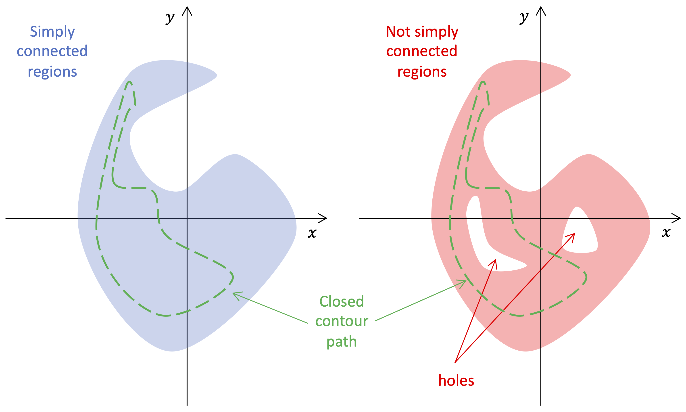
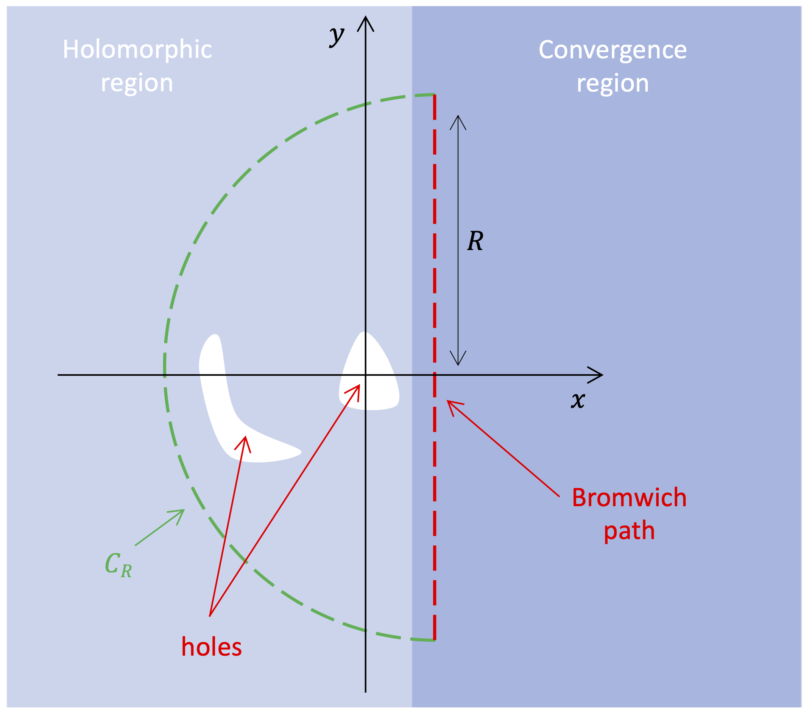

3. The Laplace transform#
Sections
\(\newcommand{\md}{\mathrm{d}\hspace{0cm}}\) \(\newcommand{\mdd}{\mathrm{d}\hspace{0cm}^2}\) \(\newcommand{\grad}{\boldsymbol{\nabla}\hspace{-0.01cm}}\) \(\newcommand{\stress}{\boldsymbol{\sigma}}\) \(\newcommand{\bn}[1]{\hat{\mathbf{#1}}}\) \(\newcommand{\bb}[1]{\mathbf{#1}}\) \(\newcommand{\sn}[1]{\hat{\boldsymbol{#1}}}\) \(\newcommand{\sb}[1]{\boldsymbol{#1}}\) \(\newcommand{\zero}{\mathbf{0}}\) \(\newcommand{\one}{\mathbf{1}}\) \(\newcommand{\loc}{\Delta\hspace{0cm}}\) \(\newcommand{\mat}{\delta\hspace{0cm}}\) \(\newcommand{\det}{\mathrm{\det}\hspace{0cm}}\) \(\newcommand{\cm}[1]{\bar{\bb{#1}}}\) \(\newcommand{\lmsum}{\sum_{n=0}^\infty\sum_{m=-n}^n}\) \(\newcommand{\kqsum}{\sum_{k=0}^\infty\sum_{q=-k}^k}\) \(\newcommand{\dif}[1]{#1\hspace{0cm}\prime}\) \(\newcommand{\lap}{\nabla^2\hspace{0cm}}\) \(\newcommand{\dermat}[1]{\frac{\mathrm{D}\hspace{0.02cm}#1}{\mathrm{D}\hspace{0.02cm} t}}\) \(\newcommand{\dercla}[1]{\frac{\mathrm{d}\hspace{0.02cm}#1}{\mathrm{d}\hspace{0.02cm} t}}\) \(\newcommand{\derpar}[1]{\frac{\partial\hspace{0.02cm}#1}{\partial\hspace{0.02cm} t}}\) \(\newcommand{\rpar}[2]{\frac{\partial\hspace{0.02cm}#1}{\partial\hspace{0.02cm} r_{#2}}}\) \(\newcommand{\xpar}[2]{\frac{\partial\hspace{0.02cm}#1}{\partial\hspace{0.02cm} x_{#2}}}\) \(\newcommand{\ddermat}[1]{\frac{\mathrm{D}^2\hspace{0.02cm}#1}{\mathrm{D}\hspace{0.02cm} t^2}}\) \(\newcommand{\ddercla}[1]{\frac{\mathrm{d}^2\hspace{0.02cm}#1}{\mathrm{d}\hspace{0.02cm} t^2}}\) \(\newcommand{\dderpar}[1]{\frac{\partial^2\hspace{0.02cm}#1}{\partial\hspace{0.02cm} t^2}}\) \(\newcommand{\drpar}[2]{\frac{\partial^2\hspace{0.02cm}#1}{\partial\hspace{0.02cm} r_{#2}^2}}\) \(\newcommand{\dxpar}[2]{\frac{\partial^2\hspace{0.02cm}#1}{\partial\hspace{0.02cm} x_{#2}^2}}\)
3.1. Complex functions#
Let us considering a complex-valued function \(f\) of a complex variable \(s\)
By considering the real, \(x\), and imaginary, \(y\), parts of the complex variable \(s=x+i\,y\), we can look at the real, \(u\), and imaginary, \(v\), parts of the function \(f=u+i\,v\) as a function of both \(x\) and \(y\)
Let us now define the derivative of \(f\) at a point \(s_0\) s the incremental ratio
and consider the partial derivatives with respect to \(x\) and \(y\)
In view of the fact that
we thus obtain
In this respect, differentiable complex function have specific constraints on how the partial derivative of its real and complex parts behave.
3.1.1. Analyticity of holomorphic functions#
In complex analysis, a complex-valued function f of a complex variable s:
is said to be holomorphic at a point \(s_0\in\mathbb{C}\) if it is differentiable at every point within a neighborhood of \(s_0\)
is said to be analytic at \(s_0\) if in a neighborhood centered at \(s_0\) it can be expanded as a convergent power series
with \(f_n\) being complex coefficients.
One of the most important theorems of complex analysis is that holomorphic functions are analytic and vice versa. From this theorem follows that holomorphic (differentiable) function in an open set \(\mathcal{U}\subseteq \mathbb{C}\) are infinitely differentiable and that the coefficients \(f_n\) are given by

3.1.2. Cauchy integral theorem#
Simply speaking, a simply connected region \(\mathcal{U}\subseteq \mathbb{C}\) is a region of the complex plane in which there are no holes, so that any closed path \(\Gamma\) can be contracted to a point. As stated by the Cauchy integral theorem, holomorphic functions on a simply connected region satisfy the following closed contour integral
In presences of holes, instead, the closed contour can be transformed as follows
where \(\gamma_k\subset\mathbb{C}\) is a closed contour surrodining the \(k\)-th hole.
3.1.2.1. Residue theorem#
When the holes are just a series of point \(s_k\in\mathcal{U}\), the closed contour \(\gamma_k\) can be chosen as a small circle \(c_k\) of radius \(r\) centred at \(s_k\) and, according to the residue theorem, one gets
with \(\mathrm{Res}(f,s_k)\) being the residue of \(f\) at \(s_k\) defined as
with \(z(\theta) = r\,e^{i\,\theta}\).
For first-order poles, it can be shown that
while, for general \(n\)-order poles, with \(n\geq0\), we have
3.1.3. Analytic continuation#
Analytic continuation is a technique to extend the domain of definition of a given analytic (or holomorphic) function. Suppose \(f\) is an analytic function defined on a non-empty open subset \(\mathcal{U}\subset\mathbb{C}\). If \(\mathcal{V}\) is a larger open subset containg the former, \(\mathcal{U}\subset\mathbb{V}\) and \(F\) is an analytic (or holomorphic) function defined on \(\mathcal{V}\) such that
then \(F\) is called an analytic continuation of \(f\). In other words, the restriction of \(F\) to \(\mathcal{U}\) is the function \(f\) we started with. The import asdpect of analytic continuation (which follows directly from the identiy theorem for holomorphic function) is that is unique, in the sense that there exists only one holomorphic function \(F\) which, once restricted to \(\mathcal{U}\), coincides with \(f\).
3.2. Laplace transform#
The Laplace transform is defined as follows
where \(s\) is a complex angular function (or Laplace variable)
and it is assumed that the function is zero at negative times
A necessary condition for existence of the integral in eq. (3.16) is that \(f\) must be locally integrable on \([0, \infty)\). Also, the integral can converge only within some subset \(\mathcal{U}\) of the complex plane. In this case, however, the complex function, as far as it is differetiable in \(\mathcal{U}\) is also holomorphic (or analytic) and, so, by analytic continuation can be extended to the whole complex plane.
As example, let us consider the Laplace transform of the following function
In particular, we obtain that the integral in eq. (3.16) converges
only assuming that \(\Re[s] > \alpha\), i.e, in the open subset
By analytic continuation, however, we can set
Another import example is the Laplace transform of the Dirac delta which yields
The definition of Laplace transform given by eq. (3.16) is the bilateral one, which differs by the definition of unilateral Laplace transform where the time integration is restricted to non-negative times, from \(0\) to \(\infty\), instead of the whole real axis, from \(-\infty\) to \(\infty\). Among the bilateral and unilateral definitions, the former has the advantage that it is strictly related to the Fourier transform and allows us to deal with the Dirac delta as well, without making further considerations. We have to keep in mind, however, that we shall apply the bilateral Laplace transform to functions which are zero for negative time, eq. (3.18).
3.2.1. Properties of the Laplace transform#
Hereinafter we list the main properties of the Laplace transform which are closely related to those of the Fourier transform
3.2.1.1. Shift in time#
The Laplace transform of a function shifted in time \(f(t+t_0)\) yields the Lalace transform \(\tilde{f}(s)\) multiplied by \(e^{s\,t_0}\)
3.2.1.2. Derivatives#
The Laplace transform of a \(n\)-th order time derivative of a function \(f(t)\) yields the Laplace transform \(\tilde{f}(\omega)\) multiplied by \(s^n\)
3.2.1.3. Convolution#
The Laplace transform of the convolution between two functions \(f(t)\) and \(g(t)\)
yields the product of the two Laplace transforms \(\tilde{f}(\omega)\) and \(\tilde{g}(\omega)\)
3.2.1.4. Real functions#
The Laplace transform of a real-valued function \(f(t)\) has the following property
with the asterisk \(*\) stands for the complex conjugate, as proved hereinafter
By denoting the real and imaginary parts of the Laplace variable \(s\) with \(x\) and \(y\), and the real and imaginary parts of the Laplace transform \(\tilde{f}(s)\) with \(u\) and \(v\)
we can write eq. (3.28) as follows
which shows how the real part \(u\) is symmetric with respect to the real axis, while the imaginary part \(v\) is anti-symmetric. In this respect, the Laplace transform of a real-valued function is real on the real axis of the complex plane, i.e., for \(s\in\mathbb{R}\).
Jordan lemma
The Jordan lemma states that
where the contour path of integration \(C_R\) is chosen depending whether the time \(t\) is positive or negative
To be applied to the inverse Laplace transform, it can be recast in the following form
3.2.2. Inverse Laplace transform#

The inverse Laplace transform is defined as follows
where \(c\) is a real number so that the contour path of integration is in the region of convergence of \(\tilde{f}(s)\). In light of this, we note that the inverse Laplace transform is obtained by integrating a path parallel to the imaginary axis of the complex domain, the so called Bromwich path.
A common case is when the Laplace transform \(\tilde{f}(s)\) converges to a (same) constant value in the limit of \(s\) going to infinity (in all the directions of the complex plane)
We will refer to this contant value as the elastic limit. In this case, eq. (3.36) can be written as follows
where we make use of the fact that, according to eq. (3.23), the inverse Laplace transform of \(1\) is the Dirac delta \(\delta(t)\). After that, as depicted in Figure X for positive times, \(t>0\), the integral along the Bromwich path is subsituted by an integral along a closed contour \(\Gamma_R\) minus the integral along the half circle \(C_R\) of radius \(R\) used to closed the Bromwich path.
and the two integrals are performed making use of the residue theorem and the Jordan lemma discussed above. In particular, in the limit of \(R\rightarrow\infty\) and thanks to eq. (3.10), the first contribution becomes the summation over closed contour path enclosing the the regions where \(\tilde{f}(s)\) is not analytic, i.e. the holes of the open subset where \(\tilde{f}(s)\) is not analytic after analytic continuation. The Jordan lemma, instead, guarantees that the second contribution yields zero because
Assuming that \(\tilde{f}(s)\) has only first-order poles \(s_k\) and making use of the Residue theorem and of eq. (3.13), we obtain
with \(f_k\) being the residues associated to the pole \(s_k\)